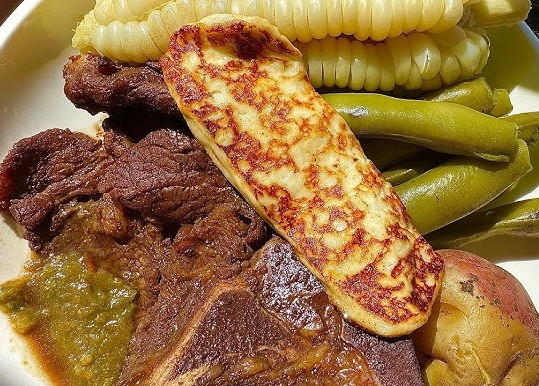
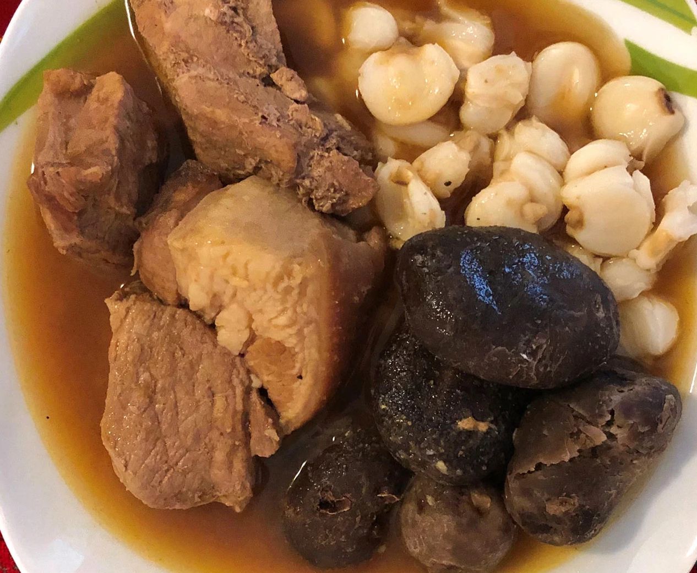
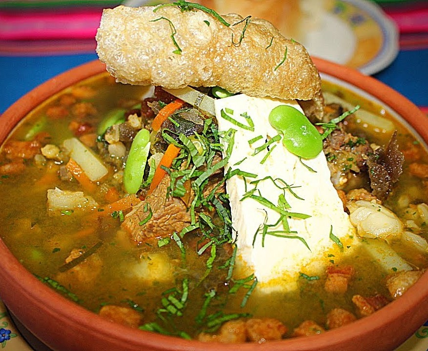
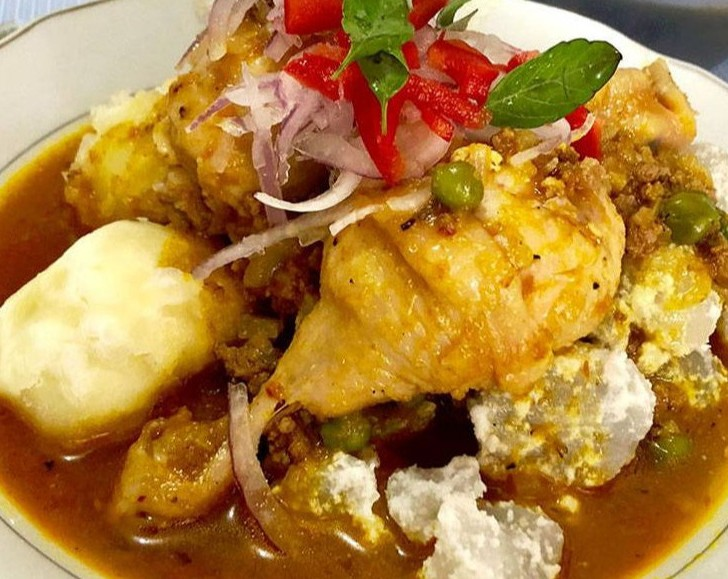
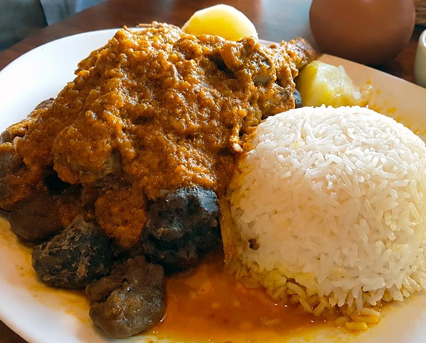
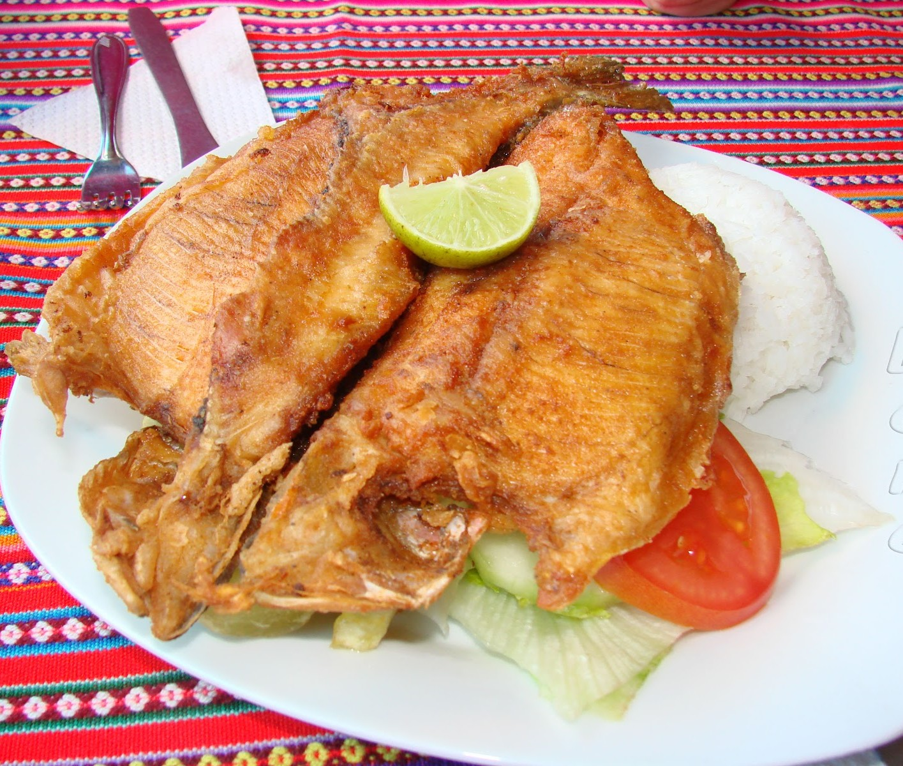
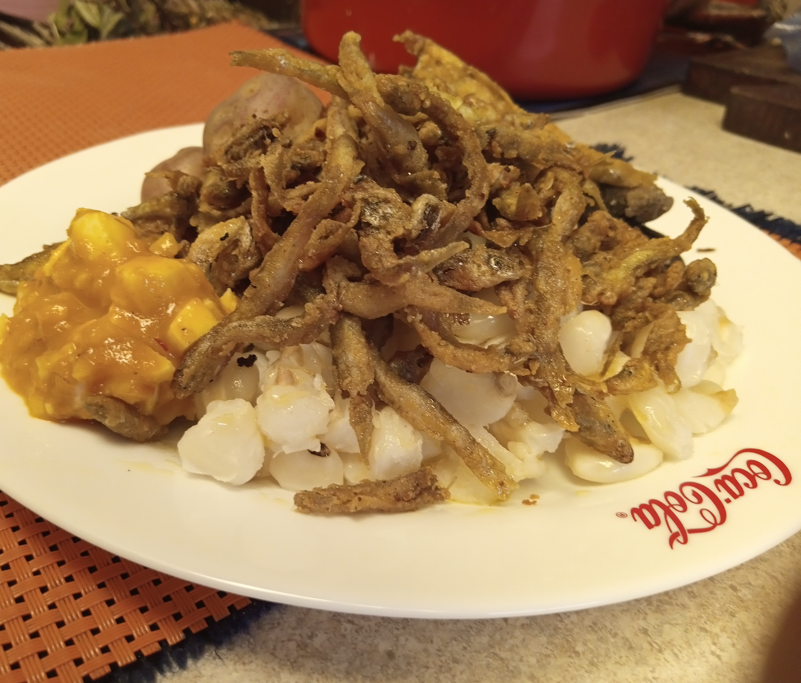

Examen de Jhonatan Mateo Quispe Lecoña

LA PAZ
La Septima Maravilla del Mundo
PLATOS TÍPICOS DE LA PAZ
Los platos mas populares de la ciudad de La Paz son:
| PLATOS DE LA PAZ | IMAGENES |
|---|---|
|
Es el plato más emblemático de la ciudad, nacido en la época del cerco a La Paz en 1781. Tradicionalmente no lleva carne, aunque hoy en día se acompaña con asado. Está compuesto por choclos tiernos, habas cocidas en su vaina, papas enteras con cáscara (khati) y un delicioso trozo de queso frito, todo acompañado de la infaltable llajwa (salsa picante boliviana). |
 |
Fricasé PaceñoEs un plato de origen colonial que se ha convertido en un clásico de la gastronomía paceña. Consiste en carne de cerdo cocida lentamente en una salsa a base de ají amarillo, cebolla, ajo y especias, acompañado de papas y arroz blanco. Su sabor intenso y su textura suave lo convierten en una delicia para los amantes de la comida tradicional. |
 |
Chairo PaceñoEs una sopa tradicional que refleja la riqueza de los ingredientes locales. Se prepara con carne de res, papas, chuño (papa deshidratada), habas, cebada y verduras, todo cocido lentamente para lograr un caldo espeso y lleno de sabor. Es un plato reconfortante ideal para los días fríos de La Paz. |
 |
Sajta de PolloEs un plato de origen colonial que se ha convertido en un clásico de la gastronomía paceña. Consiste en carne de cerdo cocida lentamente en una salsa a base de ají amarillo, cebolla, ajo y especias, acompañado de papas y arroz blanco. Su sabor intenso y su textura suave lo convierten en una delicia para los amantes de la comida tradicional. |
 |
Thimpu PaceñoEs un plato tradicional que se prepara con carne de res, papas, chuño (papa deshidratada), habas, cebada y verduras, todo cocido lentamente para lograr un caldo espeso y lleno de sabor. Es un plato reconfortante ideal para los días fríos de La Paz. |
 |
Trucha del Lago TiticacaEs un plato emblemático de la región andina, especialmente en La Paz, donde se aprovecha la abundancia de truchas provenientes del Lago Titicaca. La trucha se prepara de diversas formas, siendo la más popular la trucha frita, sazonada con hierbas locales y acompañada de papas o arroz. Su sabor fresco y su textura delicada la convierten en una opción deliciosa para los amantes de los pescados. |
 |
Ispi FritoEs un plato tradicional que se prepara con carne de res, papas, chuño (papa deshidratada), habas, cebada y verduras, todo cocido lentamente para lograr un caldo espeso y lleno de sabor. Es un plato reconfortante ideal para los días fríos de La Paz. |
 |